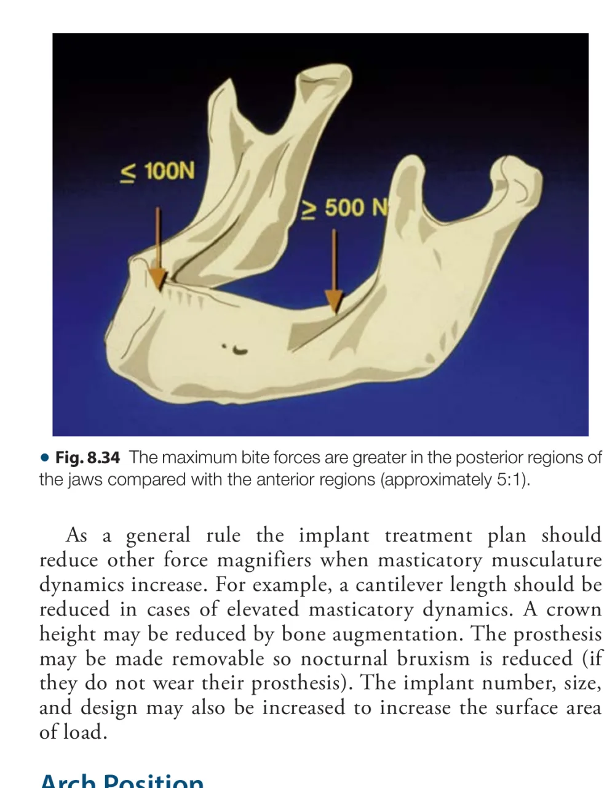
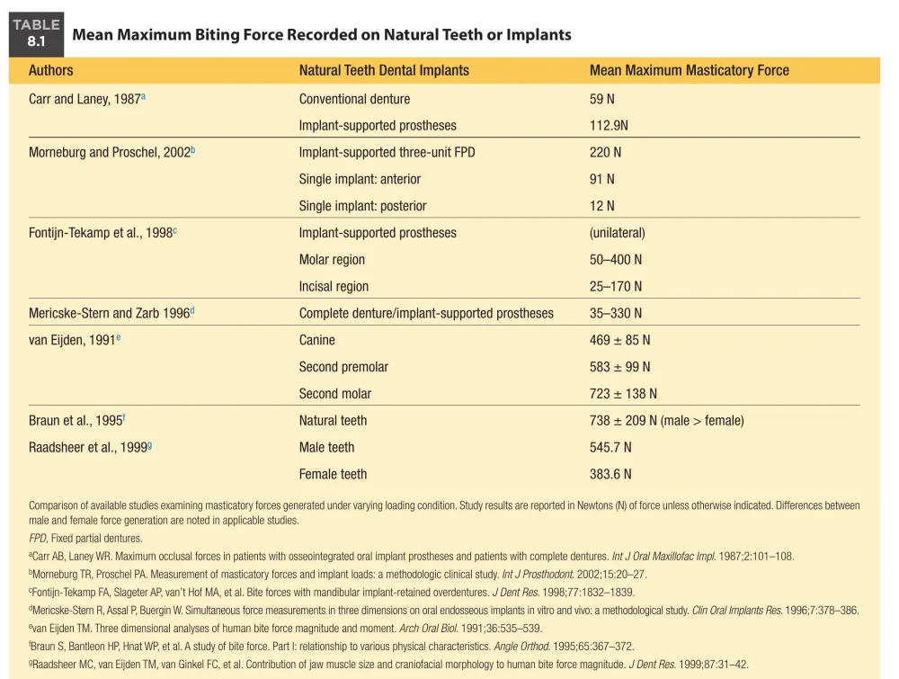

نسخه استخراجشده؛ ترجمه یا تأیید علمی انجام نشده است. وضعیت: captured
نیروی گاز بر حسب ناحیه با عدد مشخص شده است. این اعداد را نگه دار، چون مبنای انتخاب ابعاد ایمپلنتاند.
«حداکثر نیروی گاز در ناحیهی مولر بیشتر است و با پیشروی اندازهگیریها بهسمت قدامی کاهش مییابد.»
• ناحیهی انسیزور قدامی: تقریباً ۳۵ تا ۵۰ psi
• ناحیهی کانین: ۴۷ تا ۱۰۰ psi
• ناحیهی مولر: ۱۲۷ تا ۲۵۰ psi
و یک تفکیک دقیقتر: «افزون بر این، نیروها در مولر دوم ۱۰ درصد بیشتر از مولر اول بود، که نشاندهندهی دامنهی ۱۴۰ تا ۲۷۵ psi است.»
پس شیب نیرو حدود پنج برابر است از انسیزور تا مولر دوم — و از یونیت پیش میدانی که سطح دندانهای طبیعی هم ۳۰۰ درصد در همین مسیر افزایش مییابد. طبیعت نیرو و سطح را با هم بالا برده است.
و دقیقتر: «افزایش بیشتر سطح دندان طبیعی در ناحیهی مولر رخ میدهد، با ۲۰۰ درصد افزایش نسبت به پرمولرها. از این رو، قطر بزرگتر ایمپلنت بهویژه در ناحیهی مولر در نظر گرفته میشود.»
و یافتهای که ظریف است: «نیروی گاز قدامی در نبود تماس دندان خلفی کاهش مییابد و در حضور اکلوژن خلفی یا تماسهای اکسنتریک بیشتر است.»
یعنی نیروی قدامی تا حد زیادی به تماس خلفی بستگی دارد: وقتی دندانهای خلفی تماس ندارند، دو سوم فیبرهای تمپورالیس و ماستر منقبض نمیشوند — همان سازوکار عضلانی که در درس پیش دیدی.
و متغیرهای بیمار که نیروی گاز را تعیین میکنند:
• «اندازهی بیمار میتواند بر مقدار نیروی گاز اثر بگذارد. مردان بزرگ و ورزشکار میتوانند نیروهای بیشتری تولید کنند؛ بیماران با وضعیت جسمانی ضعیف اغلب نیروی کمتری از بیماران ورزشکار ایجاد میکنند.»
• «بیماران مسنتر نیروهای گاز کمتری از جوانان ثبت میکنند.»
• «موقعیت قوس اسکلتی ممکن است بر مقدار حداکثر نیروی گاز اثر بگذارد. براکیوسفالیک، با شکل سر کوتاه و پهن، ممکن است سه برابر نیروی گاز در مقایسه با شکل سر معمولی ایجاد کند.»
سه برابر، فقط از شکل سر. و این اثر، اگر براکسیسم یا کلنچینگ متوسط تا شدید هم همراهش باشد، اهمیت بیشتری پیدا میکند.
و یک یافتهی امیدبخش دربارهی بیدندانی:
«حداکثر نیروی گاز با پیشرفت آتروفی عضلانی در طول سالهای بیدندانی کاهش مییابد. نیروی اکلوزالی حداکثر ۵ psi ممکن است نتیجهی ۱۵ سال بدون دندان باشد. این نیرو ممکن است در ۳ سال پس از کاشت ایمپلنت ۳۰۰ درصد افزایش یابد.»
سیصد درصد افزایش در سه سال. این یعنی بیماری که امروز نیروی کمی دارد، ممکن است سه سال بعد نیروی بسیار بیشتری داشته باشد — و طرح درمان باید برای نیروی آینده طراحی شود، نه نیروی امروز.
و فهرست کامل: «بنابراین جنس، تودهی عضلانی، ورزش، رژیم غذایی، وضعیت دندانها، وضعیت جسمانی، و سن، همگی بر قدرت عضلانی، دینامیک جویدن، و حداکثر نیروی گاز اثر میگذارند.»
و پیامد طراحی: «برای نمونه، طول کانتیلور باید در موارد دینامیک جویدن بالا کاهش یابد.»
و قاعدهی کلی:
«بهعنوان یک قاعدهی کلی، طرح درمان ایمپلنت باید سایر تشدیدکنندههای نیرو را وقتی دینامیک عضلات جونده افزایش مییابد کاهش دهد.» — و چهار نمونه میآورد: کوتاه کردن کانتیلور، کاهش ارتفاع تاج با افزایش استخوان، متحرک کردن پروتز تا براکسیسم شبانه کم شود (اگر بیمار پروتز را شب نپوشد)، و افزایش شمار، اندازه و طراحی ایمپلنت برای افزایش سطح بار.
به سومی دقت کن — متحرک کردن پروتز یک راهبرد بیومکانیکی است: اگر بیمار پروتز را شب درآورد، ساعتهای براکسیسم شبانه اصلاً به ایمپلنت نمیرسند. و این راهکار مستقیماً «مدت» بارگذاری را کم میکند.
و چند تفاوت جنسیتی و سنی که مستند شدهاند:
• «بهطور کلی نیروهای ثبتشده در زنان تقریباً ۲۰ پوند کمتر از مردان است.»
• «مردان بخشیبیدندان نرخ شکست ایمپلنت ۱۳ درصدی دارند در مقایسه با ۷٫۷ درصد برای زنان.»
• «تحلیل استخوان رادیوگرافیک سال اول با جنس مذکر، سن پایینتر، و ایمپلنتهایی که پروتز اکستنشن دیستالی را پشتیبانی میکنند همبستگی مثبت داشت.»
و استدلالی دربارهی سن که ظریف و مهم است:
«افزون بر این، بیمار جوانتر بیشتر عمر میکند و به پشتیبانی ایمپلنت افزوده برای پروتز به مدت طولانیتری نیاز دارد. (یک بیمار ۸۰ ساله به پشتیبانی ایمپلنت برای سالهای بسیار کمتری نسبت به یک بیمار ۲۰ ساله نیاز خواهد داشت، با فرض برابری سایر عوامل.)»
یعنی سن پایین دو بار خطر میسازد: نیروی بیشتر و سالهای بیشتر — و سالهای بیشتر یعنی چرخههای بیشتر، که از یونیت پیش میدانی چهارمین عامل خستگی است.
و یک الگوی اسکلتی که باید بشناسی:
«بیمار کلاس III اسکلتی عمدتاً یک جوندهی عمودی است و نیروهای عمودی با حرکت اکسکورسیو اندک تولید میکند.» — که از منظر بیومکانیک مطلوب است.
ولی یک اشتباه رایج در تشخیص هست: «با این حال، برخی بیماران بهدلیل تحلیل استخوان قدامی یا از دست رفتن پشتیبانی خلفی و فروریختن بُعد عمودی با چرخش قدامی مندیبل، شبهکلاس III بهنظر میرسند. این بیماران وقتی موقعیت لبهی انسیزال به وضعیت اولیهاش بازگردانده شود، حرکات اکسکورسیو جانبی نشان میدهند.»
پس تشخیص کلاس III واقعی از شبهکلاس III تعیینکننده است — چون در دومی، پس از بازسازی بُعد عمودی، حرکات جانبی برمیگردند و بیومکانیک عوض میشود.

ششمین عامل نیرو، قوس مقابل است. و میشود آن را بهصورت یک ضریب عددی ساده بیان کرد که بهراحتی قابل استفاده است:
«یک رستوریشن کامل ایمپلنت ممکن است ضریب ۳ باشد، دندانهای طبیعی ضریب ۲، و یک دنچر مقابل که با بافت نرم پشتیبانی میشود ضریب ۱.»
سه سطح، و نسبت سه به یک میان بدترین و بهترین حالت.
و صریح بدان: «بنابراین بالاترین نیروها با پروتزهای ایمپلنت ایجاد میشوند.»
این ممکن است خلاف شهود بهنظر برسد — چرا پروتز ایمپلنت مقابل، بدتر از دندان طبیعی است؟ دو دلیل دارد:
دلیل اول: پروتز ثابت کامل ایمپلنت از حس عمقی (proprioception) دندان طبیعی بیبهره است، و بیمار روی آن با نیرویی چهار برابر دندان طبیعی میگزد.
دلیل دوم — و این مهمتر است:
«افزون بر این، تماسهای زودرس در الگوهای اکلوزالی یا حین پارافانکشن روی پروتزهای ایمپلنت، مسیر بسته شدن را تغییر نمیدهند، چون آگاهی اکلوزالی در پروتزهای ایمپلنت در مقایسه با دندانهای طبیعی کاهش یافته است. بنابراین انتظار میرود افزایش استرس مداوم با رستوریشن ایمپلنت رخ دهد.»
این نکتهی بسیار مهمی است. دندان طبیعی لیگامان پریودنتال دارد و با آن حس میکند که تماس زودرس وجود دارد، پس مسیر بسته شدن را عوض میکند و از آن دوری میکند.
ایمپلنت این حس را ندارد. پس تماس زودرس نهتنها اصلاح نمیشود، بلکه مدام تکرار میشود. و از یونیت پیش میدانی که تکرار یعنی شمار چرخهها، و شمار چرخهها یکی از چهار عامل خستگی است.
و حالت میانی: «بیماران با دنچر پارسیل ممکن است نیروهایی میان دندان طبیعی و دنچر کامل ثبت کنند، بسته به موقعیت و وضعیت دندانهای باقیمانده، عضلات، و مفاصل.»
و حالا مهمترین توصیهی این درس — که یک اشتباه رایج را اصلاح میکند:
«بهندرت باید قوس مقابل در یک دنچر سنتی نگه داشته شود تا استرس وارد بر قوس ایمپلنت کاهش یابد. در عوض، قوس ایمپلنت باید طوری طراحی شود که استرسهای بالاتر مورد انتظار از یک قوس مقابل با پشتیبانی ایمپلنت را جبران کند.»
یعنی راهحل، ضعیف نگه داشتن قوس مقابل نیست؛ قویتر کردن قوس ایمپلنت است. محروم کردن بیمار از درمان بهتر در یک فک، برای محافظت از فک دیگر، پاسخ درستی نیست.
و جایگاه این عامل در سلسلهمراتب:
صادقانه باید گفت: «قوس مقابل تحت شرایط درمانی معمول، کماهمیتترین تعدیلکنندهی مؤلفهی نیروست.»
پس با اینکه یکی از شش عامل است، وزنش کمترین است — و این با رتبهبندی یونیت پیش میخواند که براکسیسم و کلنچینگ را در صدر گذاشت.
ولی دستکمش نگیر: «در نتیجهی اثر قوس مقابل بر شدت نیروهای اعمالشده بر پروتز ایمپلنت، طرح درمان ممکن است برای کاهش خطر اضافهبار تغییر کند.» — یعنی کماهمیتترین بودن، بهمعنای نادیده گرفتنی بودن نیست.
